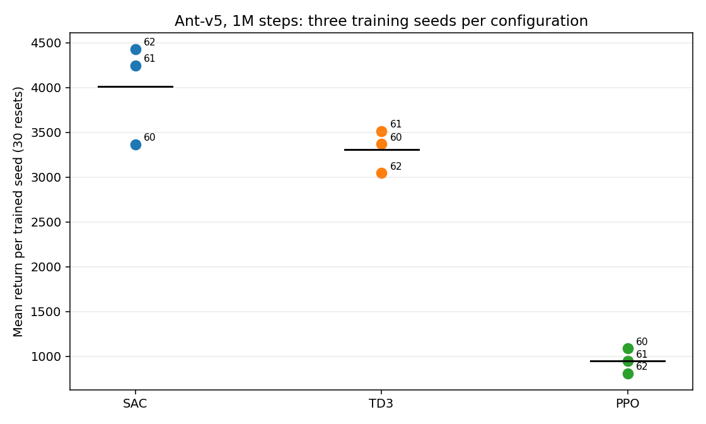

SAC × Ant-v5
This experiment uses Gymnasium, MuJoCo, and Stable-Baselines3. The exploratory campaign selected a learning rate of 1e-3 and a batch size of 128. The comparisons are based on a small number of independent training runs.
Base SAC evaluation
| Evaluation | Mean return | Forward progress | Falls |
|---|---|---|---|
| Random policy · 10 episodes | −62 ± 112 | 0.16 m | 9 / 10 |
| SAC before training · 10 episodes | 962 ± 6 | −0.89 m | 0 / 10 |
| SAC after training · 10 episodes | 5 701 ± 157 | 286.39 m | 0 / 10 |
| 30 fresh initial states | 5 303 ± 1 157 | 266.57 m | 3 / 30 |
The ± values show the sample standard deviation of episode returns. The fall column counts episodes terminated by the environment. Episodes were capped at 1,000 steps and averaged 944 steps from fresh initial states.
The additional evaluation observed falls in 10% of episodes. The multi-seed results and ablations below show how performance varied across runs and settings.
Selected SAC configuration
The exploratory ablations informed a configuration with lr=1e-3, batch=128, and two hidden layers of width 256. Each of the three new seeds (50, 51, and 52) trained for 1 million steps.
| Seed | Mean return | Episode SD | Forward progress | Falls | Episodes |
|---|---|---|---|---|---|
| 50 (selected) | 5 818 | 148 | 282.5 m | 0% | 30 |
| 51 | 5 362 | 701 | 263 m | 3% | 30 |
| 52 | 5 023 | 1 256 | 237 m | 3% | 30 |
The selected configuration had a mean of 5 401, a range of 5 023–5 818, and a spread of 794. The base configuration had a mean of 3 853, a range of 2 571–5 701, and a spread of 3 130. The lowest return for the selected configuration (5 023) exceeded the base mean (3 853). Observed fall rates were 0–3% for the selected configuration and 0–50% for the base configuration, under different protocols that preclude a causal estimate.
Statistical limitations
The earlier pooled p-values and confidence intervals were withdrawn because episodes from the same model share a training run and the analysis weighted seeds unequally. The earlier stochastic evaluation was also withdrawn because its per-episode source data were unavailable.
Two snapshots of the seed-50 training run were evaluated at 1 million steps. The checkpoint saved before the last gradient update scored 5 279 ± 1 601 with 2/10 falls. The final model scored 5 818 ± 148 with 0/30 falls. The evaluations shared their first ten reset seeds. On 30 additional shared reset seeds (920000–920029), the checkpoint scored 5 854 ± 153 and the final model scored 5 810 ± 100, with 0/30 observed falls each. The historical release bundle contains the per-episode data for this additional comparison.
Limitations include different training seeds (42/43/44 for the base configuration and 50/51/52 for the selected configuration), three independent runs per configuration, different evaluation protocols, and configuration selection using the ablations. All results come from Ant-v5.
Follow-up comparison of SAC, TD3, and PPO
The protocol specified three training seeds (60–62) per algorithm and 1 million steps per run. Within each training seed, the algorithms shared the same 30 evaluation resets. The reset sets overlap across training seeds. TD3 used Gaussian action noise with σ=0.1. Read the experiment protocol.
| Algorithm | Seed 60 | Seed 61 | Seed 62 | Mean across seeds |
|---|---|---|---|---|
| SAC | 3 366.9 | 4 243.5 | 4 426.9 | 4 012.4 |
| TD3 | 3 367.8 | 3 514.2 | 3 044.1 | 3 308.7 |
| PPO | 1 087.8 | 948.0 | 809.2 | 948.3 |

This comparison describes the tested configurations. SAC scored 1 point below TD3 at seed 60, and 729 and 1 383 points above TD3 at seeds 61 and 62. The study used three training runs per algorithm in one environment. The matched budget counts environment steps, and compute can differ between algorithms.
The separate base SAC control at seed 42 scored 1 584 ± 1 183 with 7/10 falls at 500k steps under the same final evaluation protocol as the ablations. The control used one training seed. Read the follow-up analysis.
Robustness, convergence, ablations, and baselines
We ran ten experiments with three workers and four Torch threads per worker. The tables summarize evaluations of 10–30 episodes per configuration and checkpoint.
1. Variation across training seeds (SAC, 1M steps)
| Seed | Evaluation | Mean return | Episode SD | Forward progress | Falls | Episodes |
|---|---|---|---|---|---|---|
| 42 | Final | 5 701 | 157 | 286 m | 0% | 10 |
| 43 | 1M checkpoint of 2M run | 3 286 | 904 | 171 m | 50% | 10 |
| 44 | Final | 2 571 | 1 108 | 133 m | 43% | 30 |
The mean across the three reported seed results was about 3 853, with an observed range of 2 571–5 701. The evaluations used different episode counts and combined checkpoint and final evaluations.
2. Checkpoint evaluations every 250k steps (seed 43)
| Steps | 250k | 500k | 750k | 1M | 1.25M | 1.5M | 1.75M | 2M |
|---|---|---|---|---|---|---|---|---|
| Return | 1 068 | 2 324 | 3 348 | 3 286 | 2 011 | 2 974 | 2 315 | 3 394 |
Evaluation returns for seed 43 fluctuated after 750k steps. A general performance plateau or optimal budget would require evidence from more than one training trajectory.
3. Hyperparameter ablations (SAC, seed 42, 500k steps, one factor at a time)
| Factor | Setting | Return | Std. dev. | Falls |
|---|---|---|---|---|
| Network | 64,64 | 657 | 579 | 80% |
| Network | 128,128 | 2 074 | 743 | 30% |
| Network | 256,256 (base) | See the 1M-step reference | ||
| Learning rate | 1e-4 | 1 803 | 700 | 30% |
| Learning rate | 3e-4 (base) | See the 1M-step reference | ||
| Learning rate | 1e-3 | 4 503 | 1 241 | 10% |
| Batch size | 128 | 2 389 | 1 266 | 60% |
| Batch size | 256 (base) | See the 1M-step reference | ||
| Batch size | 512 | 1 707 | 1 124 | 70% |
In this single-seed exploratory protocol, a learning rate of 1e-3 performed better than 1e-4, and a batch size of 128 performed better than 512. The original campaign lacked a matched final evaluation of the base configuration at 500k steps.
4. Algorithm baselines (requested 1M steps, seed 42)
| Algorithm | Actual steps | Mean return | Episode SD | Forward progress | Falls |
|---|---|---|---|---|---|
| SAC reference | 1 000 000 | 5 701 | 157 | 286 m | 0 / 10 |
| TD3 | 1 000 000 | 3 117 | 415 | 137 m | 5 / 30 |
| PPO | 1 001 472 | 1 199 | 332 | 35 m | 3 / 30 |
The PPO run finished its last 2,048-step rollout and exceeded the requested budget. The SAC reference used 10 evaluation episodes and TD3 and PPO used 30 each. TD3 ran without action exploration noise. Each algorithm used a single training run in this baseline comparison.
Selected model rollout (seed 50)
The video shows a 1,000-step deterministic rollout of the seed-50 policy on reset seed 100050. Download video · Recording notes.